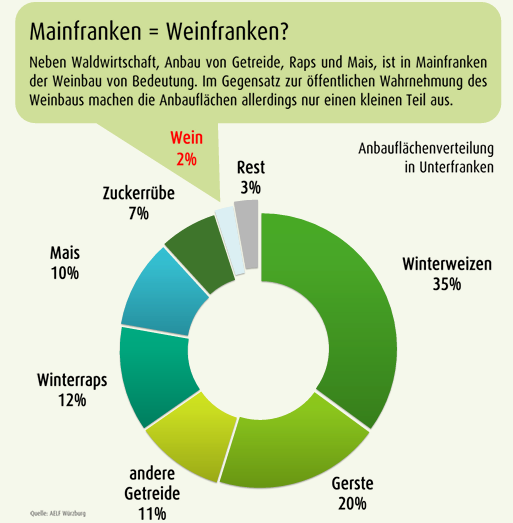

Die Region um Würzburg wird als Mainfranken bezeichnet, manchmal scherzhaft auch als
„Weinfranken“. Stimmt das? Würzburg ist zwar von sehr vielen
Weinbergen umgeben, die sich entlang des Mains erstrecken. Jedoch macht der Weinbau nur einen kleinen Teil
(ca. 2%) der
Anbauflächen aus. Außer Weintrauben werden viel mehr Zuckerrüben, Mais, Winterraps, Gerste, Winterweizen und
andere
Getreide
angebaut.
Aufgabe: Sieh dir die nachfolgende Grafik an, was bei uns auf den Feldern angebaut wird. Wie viel Getreide
wird bei uns angebaut?

Daten vom AELF Würzburg
Doch was genau hat das mit den Ökosystemen vor Ort zu tun? Ganz einfach, die Weinberge,
Felder und
Obstwiesen wurden von Menschenhand angelegt und waren nicht immer da.
Die ursprünglich dort vorkommenden Pflanzenarten können auf den Feldern nicht wachsen oder werden mit Herbiziden
gezielt bekämpft. Viele
Insekten
verlieren damit ihre Nahrungsquellen oder werden durch Insektizide getötet, da sie als Schädlinge die
Ernten
gefährden.
Der Anbau findet fast immer in sogenannten Monokulturen statt. Das heißt, es wird
nur eine einzige Nutzpflanze angebaut. Dadurch sind sie noch anfälliger für Schädlinge und
es
müssen noch mehr Pestizide ausgebracht werden. Auch muss der Boden, dem die Nährstoffe entzogen
werden
immer wieder gedüngt werden. Durch das Düngen und die Pestizide gelangen viele Chemikalien in
die
Umwelt, die sehr schädlich für die beeinflusste Tier- und Pflanzenwelt - und uns Menschen - sein können.
Durch diese Eingriffe in unsere Ökosysteme für die Produktion unserer Nahrungspflanzen geht viel Lebensraum für
heimische Tiere, Pflanzen oder Pilze verloren. Weltweit.
Aufgabe: Schau dir folgende Bildergalerie an. Was kannst du erkennen?
Du kannst stattdessen
auch die Google-Maps Karte nutzen, wenn du mit den Google-Maps Nutzungsbedingungen einverstanden bist.
Zu sehen sind die riesigen Flächen voller Gewächshäuser
in Spanien, nahe der Stadt Almería. Man kann diese Region dadurch sogar vom Weltall aus erkennen. Hier wird ein
Großteil unseres Obstes und Gemüses produziert. Dafür gehen
riesige Flächen vor Ort verloren.
Außerdem werden enorme Mengen Grundwasser benötigt.
Nötig ist dies, damit wir unser Obst und Gemüse ganzjährig und möglichst billig essen können.
Für die Ökosysteme und die Menschen in Spanien ist das ein großes Problem: Der massenhafte Anbau
führt dort zur Austrocknung der Landschaft, zur Vergiftung des Trinkwassers und zur Zerstörung vieler
Ökosysteme.
Willst du beim Einkauf von Obst und Gemüse unserer Umwelt etwas Gutes tun? Dann lauten die Stichworte:
Regional & Saisonal
Aufgabe: Schau dir diesen (stark vereinfachten) Saisonkalender an. Welches Gemüse und
Obst sind jetzt in diesem Monat bei uns regional verfügbar?
Frühling
Im Frühling beginnt die Ernte der ersten frischen Gemüsesorten. Blattspinat und Radieschen
wachsen
schon früh im Jahr, gefolgt von der Spargelsaison. Gegen Ende des Frühlings reifen die ersten
Erdbeeren und leiten in den Sommer über.
Sommer
Im Sommer ist das Angebot an regionalem Obst und Gemüse besonders groß. Kirschen gehören zu den
typischen Sommerfrüchten, während Paprika und Tomaten nun voll ausreifen. Auch Melonen werden in
warmen Regionen Deutschlands angebaut und geerntet.
Winter
Im Winter gibt es vor allem gut lagerfähige Lebensmittel aus der Region. Dazu zählen Wurzelgemüse
wie Karotten und Steckrüben, aber auch Rosenkohl und winterliches Blattgemüse wie Grünkohl,
Feldsalat oder Winterspinat. Zusätzlich stehen eingelagerte Äpfel aus der Herbsternte zur
Verfügung.
Herbst
Der Herbst ist die Zeit der großen Ernte. Kürbisse prägen diese Jahreszeit ebenso wie
Äpfeln, Birnen, Pflaumen oder anderes Streuobst. In den Weinregionen beginnt außerdem die
Weinlese,
bei der Trauben
geerntet werden.
Image generated by Gemini, an AI from Google.
Es lohnt sich, mit solch einem Saisonkalender seine Obst- und Gemüseeinkäufe zu planen. Durch den
regionalen
Einkauf und Beachtung der saisonalen Verfügbarkeit bei uns
schützt du die Ökosysteme vor Ort - und auch in teilweise sehr weit entfernten Regionen auf unserer Erde.
Gleichzeitig
reduzierst du den Energieverbrauch, sowie die Abgabe von klimaschädlichen
Abgasen aufgrund langer Transportwege mit Schiffen, LKWs und Flugzeugen.